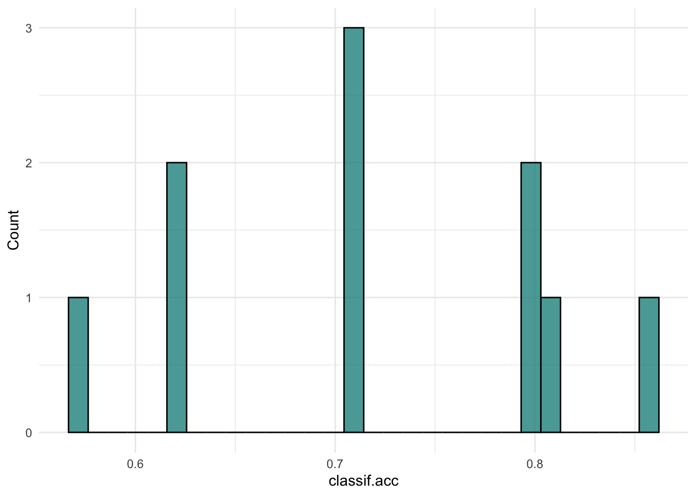
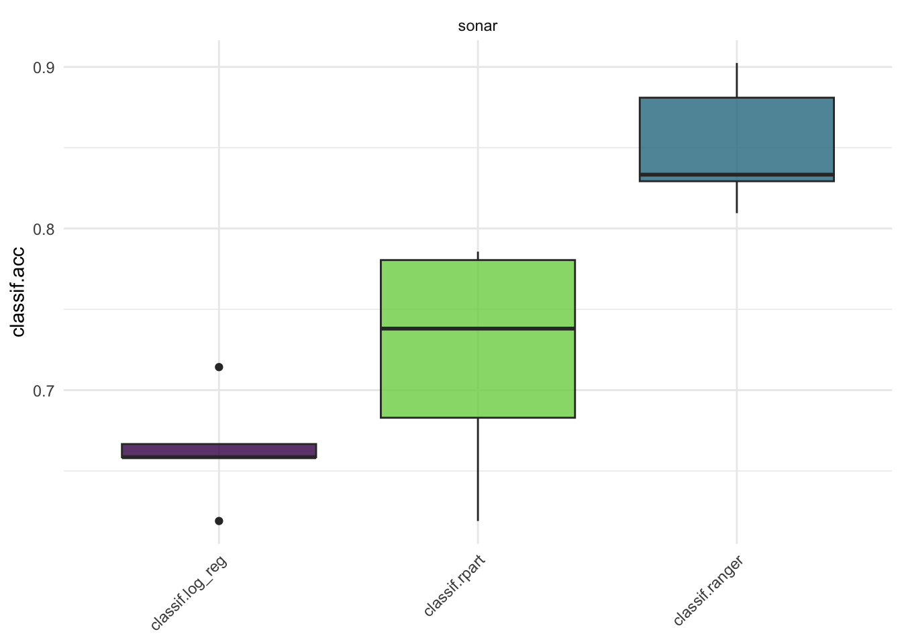
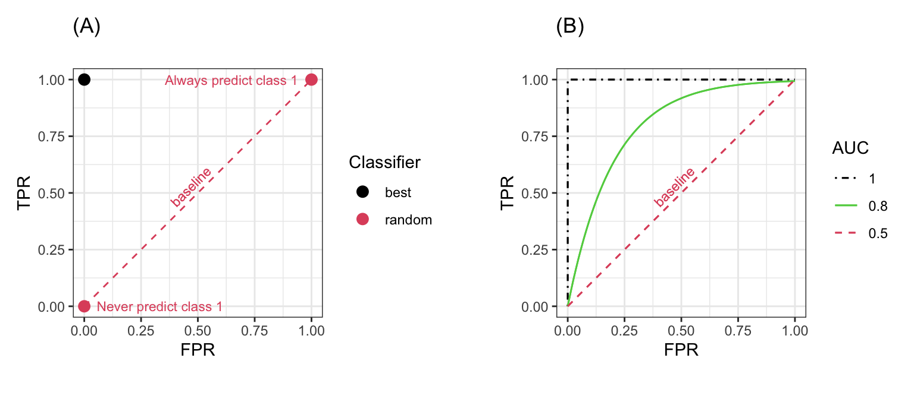
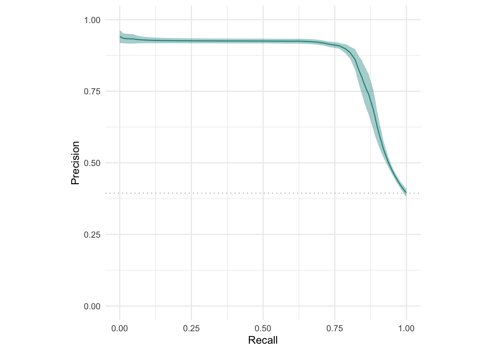
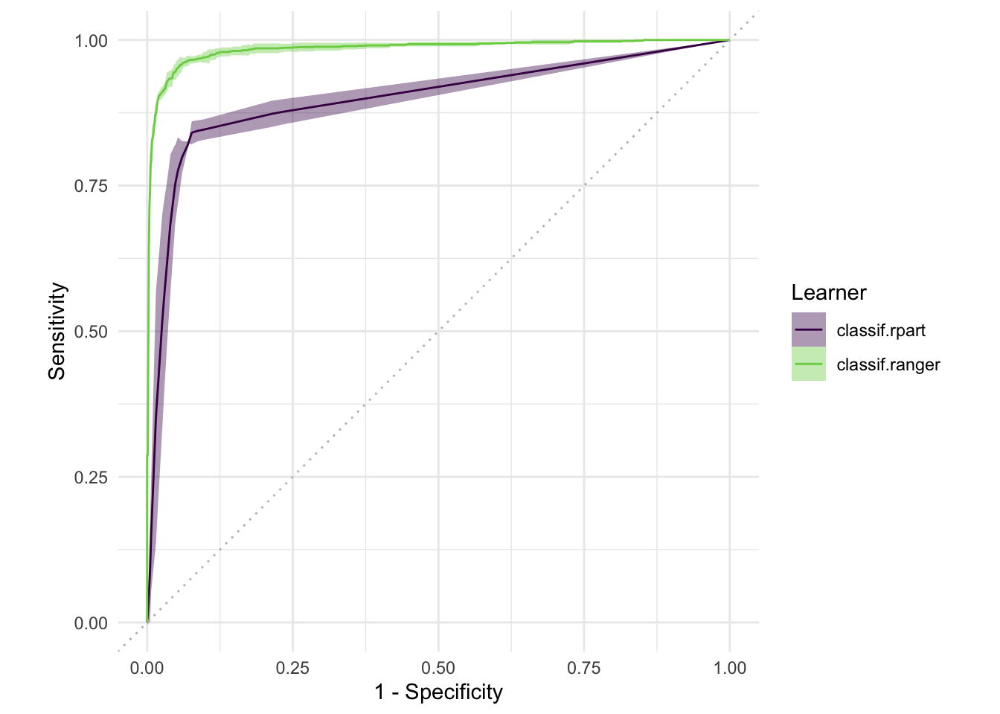

as.data.table(mlr_resamplings)
Important
Resampling
특정한 데이터로 훈련된 머신러닝 모델은 새로운 데이터에도 일반화시킬 수 있어야 합니다. 다시 말해 학습 데이터로 훈련된 모델이 좋은 성능을 낸다면, 다른 데이터를 통해서도 좋은 성능이 나와야 한다는 것입니다.
모델의 성능의 일반화를 평가하기 위해선 우선 모델의 성능을 평가할 지표를 선택해야 합니다. 목적에 따라 정확도가 될 수도 있고, auc 가 될 수도 있겠죠.
적절한 평가지표를 선택했다면, 일반화 평가를 위해 사용 가능한 데이터를 어떻게 사용할지를 정해주어야 합니다. 이 때 모델 학습에 사용된 데이터는 사용되어서는 안됩니다. 동일한 데이터로 검증해봤자 동일한 성능이 나올테니까요. 훈련데이터서는 좋은 성능을 보여주었지만, 새로운 데이터에서는 예측 성능이 나빠질 수도 있구요 (과적합, Overfitting).
따라서, 학습에 사용된 training 데이터를 사용하지 않고 모델의 성능을 테스트하는 것이 일반적입니다. 그러나 학습에 사용된 데이터와 동일한 피처, 동일한 형태를 갖고 있는 새로운 데이터가 없는 것이 일반적입니다. 이 문제를 해결하기 위해, 기존에 학습했던 데이터의 일부분만을 사용하여 평가에 사용하게 되었습니다. 그래서 전체 데이터에서 training 데이터, test 데이터를 나눈 뒤, train 데이터로만 학습을 하고, test 데이터는 새로운 데이터인 것처럼 간주하고 학습된 모델의 성능을 평가하는 것입니다.
가장 흔한 전략은 홀드아웃(holdout) 전략입니다. 데이터에서 특정 비율로 랜덤하게 데이터를 나누어 training 데이터와 test 데이터로 나누는 것이죠.
이상적으로는 training 데이터가 굉장히 커서, 학습 시 데이터의 특성을 대표할 수 있는 것입니다. test 데이터더 신뢰할 수 있는 일반화를 할 수 있도록 큰 데이터가 필요할테구요. 그렇지만 문제는 역시 사용할 수 있는 데이터가 제한됐다는 것입니다.
이 문제를 해결할 수 있는 전략이 바로 Resampling 전략입니다. Resampling 전략은 가능한 모든 데이터를 여러 개의 training과 test 데이터로 반복적으로 나누어 학습을 하고, 모델의 성능의 평균을 계산하는 전략입니다. 반복하는 횟수가 많으면 많을수록 모델의 성능에 대한 분산이 감소할테고, 그러면 더욱 신뢰할 수 있는 성능을 확인할 수 있을 것입니다.
Resampling 종류
mlr3 에서 실행가능한 모든 리샘플링 전략은 mlr_resamplings 딕셔너리를 통해 확인가능합니다. 홀드아웃, 교차 검증(CV), 부트스트랩 등이 포함되어있습니다.
params 열을 보면 resampling을 위한 파라미터들이 나와있습니다. 예를 들어 holdout은 ratio를 통해 어떤 비율로 train, test를 나눌 것인지, cv는 folds를 통해 몇 개로 데이터를 나눌 것인지를 설정해줄 수 있죠.
Resampling 객체 생성
리샘플링 객체를 만들어봅시다. 우선 holdout을 이용해 리샘플링을 진행하겠습니다. 리샘플링 객체는 rsmp()를 통해 만들 수 있습니다.
resampling <- rsmp("holdout")
resampling<ResamplingHoldout>: Holdout
* Iterations: 1
* Instantiated: FALSE
* Parameters: ratio=0.6667생성한 리샘플링 객체를 확인했을 때, Instantiated: FALSE라고 되어있습니다. 아직 리샘플링을 수행하지 않았기 때문입니다.
또한 holdout 의 ratio를 정해주지 않았기 문에 2/3가 초기값으로 설정되어있습니다. 즉 데이터의 3분의 2는 훈련에, 3분의 1은 검증에 쓰이게 됩니다. 새로운 리샘플링 객체를 만들 때 holdout 비율을 설정하거나 기존의 객체의 파라미터 값을 수정할 수 있습니다.
resampling <- rsmp("holdout", ratio=0.8)
resampling$param_set$values <- list(ratio=0.5)holdout은 성능을 일반화하는 과정을 한 번밖에 수행하지 않습니다. 따라서 좀더 신뢰성 있는 성능 측정을 위해, 가장 많이 사용되는 리샘플링 방법 중 하나인 교차 검증(cv)를 사용하도록 하겠습니다.
resampling <- rsmp("cv", folds=10)Instantiation
데이터가 들어가 있는 태스크에 대해 리샘플링을 수행하기 위해 리샘플링 객체의 $instantiate() 메소드를 이용해야합니다. 메소드 안에 태스크를 넣어주면 리샘플링이 적용됐다는 의미에서 Instantiated: TRUE가 출력됩니다.
task <- tsk("sonar")
resampling$instantiate(task)
resampling<ResamplingCV>: Cross-Validation
* Iterations: 10
* Instantiated: TRUE
* Parameters: folds=10실행
리샘플리의 실행은 resample() 을 사용합니다.
learner <- lrn("classif.rpart", predict_type="prob")
rr <- resample(task, learner, resampling)
rr<ResampleResult> with 10 resampling iterations
task_id learner_id resampling_id iteration warnings errors
sonar classif.rpart cv 1 0 0
sonar classif.rpart cv 2 0 0
sonar classif.rpart cv 3 0 0
sonar classif.rpart cv 4 0 0
sonar classif.rpart cv 5 0 0
sonar classif.rpart cv 6 0 0
sonar classif.rpart cv 7 0 0
sonar classif.rpart cv 8 0 0
sonar classif.rpart cv 9 0 0
sonar classif.rpart cv 10 0 0리샘플링 실행이 완료되었고, rr이라는 객체 안에 리샘플링 결과가 저장되어있습니다. 리샘플링을 통한 모델의 성능 평가는 $score()와 $aggregate() 메소드를 이용합니다.
$score()와 $aggregate() 모두 Measure 객체를 이용해 성능을 측정합니다. 기본적으로 성능을 측정할 때는 검증을 위한 데이터셋을 활용하게 됩니다.
우선 정확도(classif.acc)를 통해 모델의 정확도를 평가해보겠습니다.
acc <- rr$score(msr("classif.acc"))
acc[,.(iteration, classif.acc)]$score()를 통해 모델의 성능을 살펴보니 cv에서 설정한 10번의 반복 별로 성능이 출력되는 것을 알 수 있습니다.
다음으로 $aggregate()를 이용해 모델의 성능을 살펴보겠습니다. $aggregate()는 반복 때마다 계산된 성능의 평균 값을 계산하여 출력합니다.
rr$aggregate(msr("classif.acc"))classif.acc
0.7219048 여러 개의 평가 지표로 모델의 성능을 평가할 수도 있습니다.
measures <- msrs(c("classif.acc",
"classif.sensitivity",
"classif.specificity",
"classif.auc"))
rr$aggregate(measures) classif.acc classif.sensitivity classif.specificity classif.auc
0.7219048 0.7557955 0.7094017 0.7738624 결과 시각화
mlr3viz의 autoplot()을 통해 리샘플링 결과를 시각화할 수 있습니다.
require(mlr3viz)
autoplot(rr, measure = msr("classif.acc"), type="boxplot")
autoplot(rr, measure = msr("classif.acc"), type="histogram")

Benchmarking
벤치마킹은 다른 러너 또는 여러 태스크들을 각기 다른 리샘플링 방법을 이용해 학습시킬 수 있는 방법입니다. 지금까지는 하나의 태스크에 하나의 러너, 하나의 리샘플링을 해주었다면, 벤치마킹을 이용해서는 여러 가지의 학습을 한번에 수행할 수 있는 것이지요.
이 벤치마킹은 여러 가지 러너와 리샘플링을 비교함으로써 성능별로 좋은 러너를 나열하여 쉽게 비교할 수 있다는 장점이 있습니다.
벤치마킹 설계하기
mlr3에서 벤치마크 실험을 진행하기 위해서는 benchmark_grid() 를 이용해 설계를 해줘야 합니다. 이 때 설계라는 것은 어떤 태스크를 사용할 것인지, 어떤 러너들을 어떻게 리샘플링 할 것인지 등을 조합해주는 것입니다.
sonar 태스크를 예시로, 분류 모형 중 로지스틱 회귀분석 (classif.log_reg), 의사결정나무(classif.rpart), 랜덤 포레스트(classif.ranger) 러너를 5 Fold 교차검증(CV)으로 비교하도록 설계를 진행하겠습니다.
library(mlr3)
library(mlr3learners)
tsk <- tsk("sonar")
lrns <- lrns(c("classif.log_reg","classif.rpart","classif.ranger"),
predict_type="prob")
rsmp <- rsmps("cv", folds=5)
design <- benchmark_grid(
tasks = tsk,
learners = lrns,
resamplings = rsmp
)
head(design)벤치마킹 실험하기
벤치마크 설계를 실행하기 위해선 benchmark()함수를 이용합니다.
bmr <- benchmark(design)
bmr<BenchmarkResult> of 15 rows with 3 resampling runs
nr task_id learner_id resampling_id iters warnings errors
1 sonar classif.log_reg cv 5 0 0
2 sonar classif.rpart cv 5 0 0
3 sonar classif.ranger cv 5 0 0벤치마킹이 끝났다면, $aggregate() 를 이용해 성능을 검증해보면 됩니다. 분류의 정확도를 예시로 살펴보겠습니다.
acc <- bmr$aggregate(msr("classif.acc"))
acc[,.(task_id, learner_id, classif.acc)]벤치마크결과 객체 살펴보기
벤치마크결과(BenchmarkResult) 객체는 리샘플링결과(ResampleResult) 객체의 집합입니다. 이 객체는 $resample_result(i) 메소드를 이용해 리샘플링 결과를 추출할 수 있습니다. 이 때, i는 벤치마크 실험번호를 의미합니다. 위의 예시는 세 가지 러너로 벤치마킹을 했기 때문에, i는 러너를 의미합니다.
rr_lr <- bmr$resample_result(1)
rr_rpart <- bmr$resample_result(2)
rr_ranger <- bmr$resample_result(3)
rr_lr<ResampleResult> with 5 resampling iterations
task_id learner_id resampling_id iteration warnings errors
sonar classif.log_reg cv 1 0 0
sonar classif.log_reg cv 2 0 0
sonar classif.log_reg cv 3 0 0
sonar classif.log_reg cv 4 0 0
sonar classif.log_reg cv 5 0 0rr_ranger<ResampleResult> with 5 resampling iterations
task_id learner_id resampling_id iteration warnings errors
sonar classif.ranger cv 1 0 0
sonar classif.ranger cv 2 0 0
sonar classif.ranger cv 3 0 0
sonar classif.ranger cv 4 0 0
sonar classif.ranger cv 5 0 0ResampleResult 객체들은 as_benchmark_result() 함수를 이용해 다시 BenchmarkResult로 변환될 수 있습니다. 또한 c()를 이용해 묶을 수 있습니다.
bmr1 = as_benchmark_result(rr_rpart)
bmr2 = as_benchmark_result(rr_ranger)
bmr_combined = c(bmr1, bmr2)
bmr_combined$aggregate(msr("classif.acc"))library(mlr3viz)
autoplot(bmr, measure=msr("classif.acc"))
ROC 분석
ROC (Receiver Operating Characteristic) 분석은 타겟이 binary 형태인 분류 모델에서 널리 사용되고 있습니다. 두 개의 값을 분류하는 모델에서는 혼동 행렬 (Confusion matrix)을 통해 아래와 같은 값들을 계산할 수 있습니다.
- True Positive Rate (TPR), Sensitivity 또는 Recall: 실제로 positive인 값들을 얼마나 많이 true positive로 예측했는가?
- True Negative Rate (TNR) 또는 Specificity: 실제로 negative인 값들을 얼마나 많이 true negative로 예측했는가?
- False Positive Rate (FPR) 또는 1-Specificity: 실제로 positive인 값들을 얼마마나 많이 true negative로 예측했는가?
- Positive Predictive Value (PPV) 또는 Precision: positive라고 예측했다면, 실제로 positive인 경우와 얼마나 같은가?
- Negative Predictive Value (NPV): negative라고 예측했을 때, 실제로 negative인 경우와 얼마나 같은가?
TPR과 FPR은 배타적 관계(trade-off)에 있기 떄문에, 일반적으로 높은 TPR과 낮은 FPR을 동시에 달성하는 것은 어렵습니다. ROC 분석은 TPR과 FPR의 관계를 시각화함으로써 성능을 평가하기 위해 사용됩니다.
이진 분류모델의 가장 좋은 성능은 TPR은 1, FPR은 0으로 나타나는 값입니다. 분류모델은 랜덤하게 분류 라벨을 예측하여 만들어지는 값입니다. 예를 들어 실제로 positive 값이 25%확률로 positive class에 분류된다면, TPR은 0.25가 됩니다. 반면에 negative 값이 25%의 확률로 positive class에 분류된다면 FPR이 0.25가 됩니다.
만약 이진 분류모델이 확률을 예측하는 경우, threshold를 정하여 positive, negatvie로 분류할 확률을 나누고, 이들을 각각 positive, negative에 지정하게 됩니다. threshold를 어떻게 지정해주는지에 따라 TPR과 FPR 값이 달라지게 될 것이고, 이 값들을 시각화한 것이 바로 ROC 곡선입니다.

task = tsk("sonar")
learner = lrn("classif.rpart", predict_type = "prob")
splits = partition(task, ratio = 0.8)
learner$train(task, splits$train)
pred = learner$predict(task, splits$test)
pred$confusion truth
response M R
M 17 9
R 5 10mlr3에서 ROC 곡선은 다른 그래프들과 마찬가지로 mlr3viz를 이용해 그릴 수 있습니다.
library(mlr3viz)
autoplot(pred, type = "roc")
ROC 곡선 뿐만 아니라 Precision-Recall (PR) 곡선도 그릴 수 있습니다. ROC 곡선과 PR 곡선은 주로 데이터가 불균형할 때 선호됩니다. 이 때 데이터가 불균형하다는 것은 예측 대상 (target)이 한쪽으로 치우쳤다는 것을 의미합니다. 이런 경우 ROC 곡선은 모델에 대한 정확한 성능을 평가하지 못합니다.
autoplot(pred, type = "prc")ResampleResult에 대해서도 ROC 곡선과 PR 곡선 으로 시각화가 가능합니다.
rr = resample(
task = tsk("spam"),
learner = lrn("classif.rpart", predict_type="prob"),
resampling = rsmp("cv", folds = 10)
)
autoplot(rr, type = "roc")
autoplot(rr, type = "prc")
마찬가지로 여러 개의 러너를 비교하는 BenchmarkResult 역시 시각화할 수 있습니다.
design = benchmark_grid(
tasks = tsk("spam"),
learners = lrns(c("classif.rpart", "classif.ranger"), predict_type = "prob"),
resamplings = rsmp("cv", folds = 3)
)
bmr = benchmark(design)
autoplot(bmr, type = "roc")
autoplot(bmr, type = "prc")
클래스, 함수 정리
| R6 Class | Sugar function | 요약 |
|---|---|---|
| Resampling | rsmp() | 리샘플링을 위해 훈련, 검증 세트 배정 |
| ResampleResult | resample() | 리샘플링으로 주어진 태스크에 대한 러너 평가 |
| - | benchmark_grid() | 러너, 태스크, 리샘플링 그리드 구성 |
| BenchmarkResult | benchmark() | 벤치마크 그리드로 러너 평가 |
레퍼런스
- https://mlr3book.mlr-org.com/performance.html#sec-roc